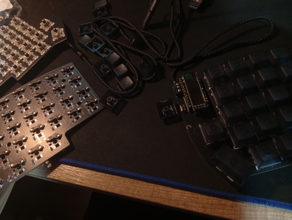

I started using Vim around the beginning of 2025 and was constantly tinkering with my setup. By March 2026, I felt pretty confortable experimenting with VimScript and looking up the help pages for whatever I thought I needed, just to find myself going way off track writing custom tablines or terminal wrappers, but it never stopped being fun.
At some point, I decided to make my configuration completely self-contained, to the point where I could drop my vimrc onto any machine, source it, and start coding right away without downloading any plugins, dealing with external errors, or even opening another terminal emulator window. I wasn't using a lot a plugins to begin with, but the process of writing everything that I wanted myself gave me a deeper appreciation and grasp of the tool I use to code every day.
I'm not done yet, of course, and don't think I will be anytime soon, but I'm happy with how the setup turned out. I created a Gist with a version of the vimrc, colorscheme, and terminal wrapper script I use for Linux and Windows, but I maintain the whole thing, along with other config files for my setups (like i3 and AHK), in a GitHub repository.
I stumbled upon custom-built keyboards on YouTube, and it caught my attention, as I'd seen the likes of ThePrimeagen and Lex Fridman who hold their split Kinesis dear to their hearts, and many reviews saying how much an ergonomic keyboard could prevent wrist pain, improve posture, and typing overall. So after learning a bit of soldering and getting more comfortable with electronics, I've purchased a Lily58 clone build kit and built my first custom keyboard.

It was not all sunshine and rainbows, of course, as I had to resolder some key sockets and tiny diodes afterwards, and my WPM dropped to around 7 in the first week using it. But it all paid off, as now I've practically ditched my mouse in my workflow in favor of QMK mouse movements and shortcuts, am faster and more comfortable writing code with the layers I customized using Vial, and keep improving my typing faster than before.